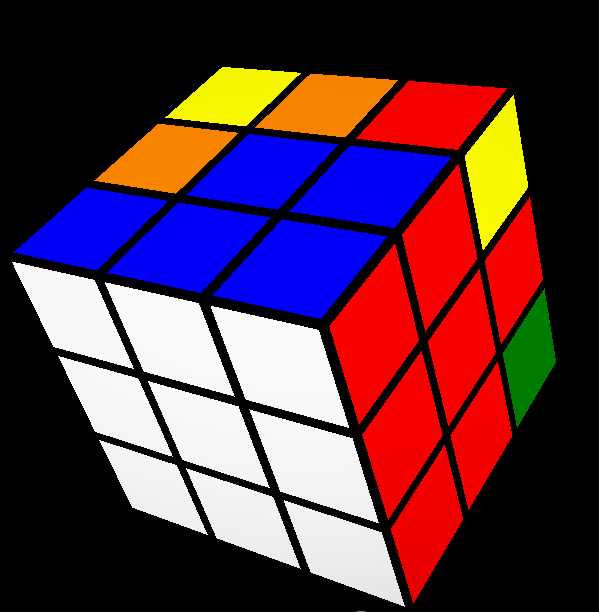
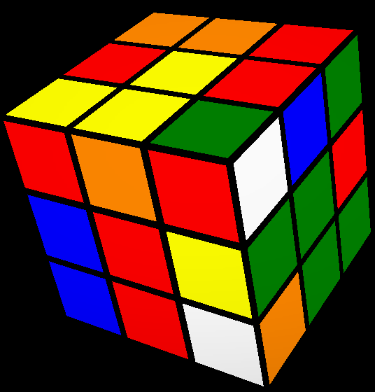
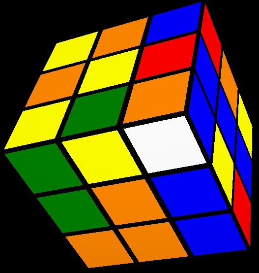
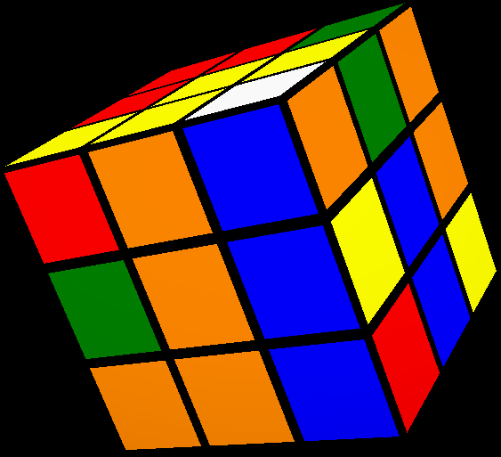
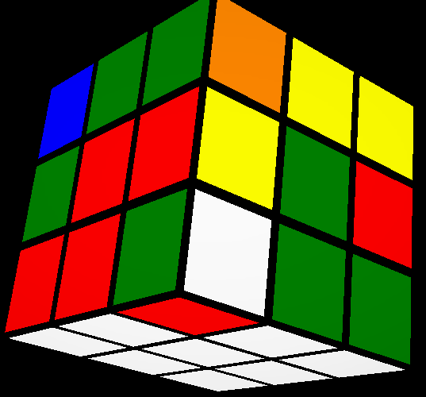

تركيب الزواية للوجه الابيض"حل الوجه الابيض" كامل

_-_-_-_-_-_-_-_-_
نسيب الزائد الابيض تحت ثم لو كان
_-_-_-_-_-_-_-_-_
ندور علي زواية بها ابيض ثم نوديه مابين لونينه يعني نشوف ايه اللونين الي مع الابيض ثم نوديه مابين اللنين و تكون علي يمينك
لو كانت بتبص علي اليمين زي

نعمل R U R'
_-_-_-_-_-_-_-_-_
لو كانت بتبص علي اليسار زي

نعمل U R U' R'
_-_-_-_-_-_-_-_-_
لو كانت بتبص فوق زي

نعمل R U U R' U' R U R'
_-_-_-_-_-_-_-_-_
لو ملقناش زويا بها ابيض في الطبق السفلية ندور تحت في وحدة محلولة غلط ولا لا اكيد هنلاقي واحدة محلولة غلط لو الزاءد الابيض متحلش
لو كانت محطوطةغلط نحطة علي اليمين

نعمل R U R' U'
_-_-_-_-_-_-_-_-_
وكدة نكون شرحنا كيفية حل الوجه الابيض
فديو توضيحي عن الذي شرح
التالي
السابق